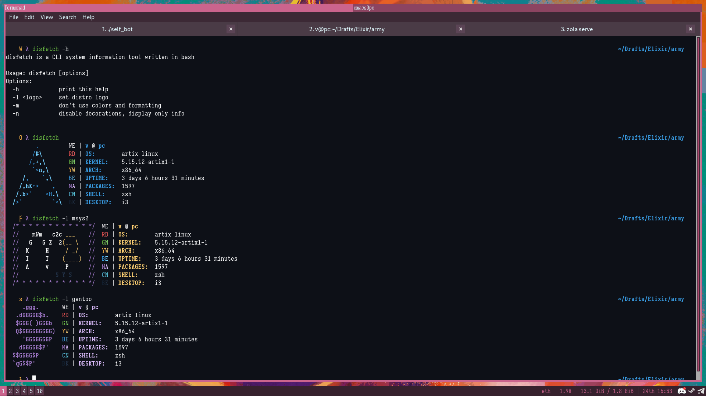
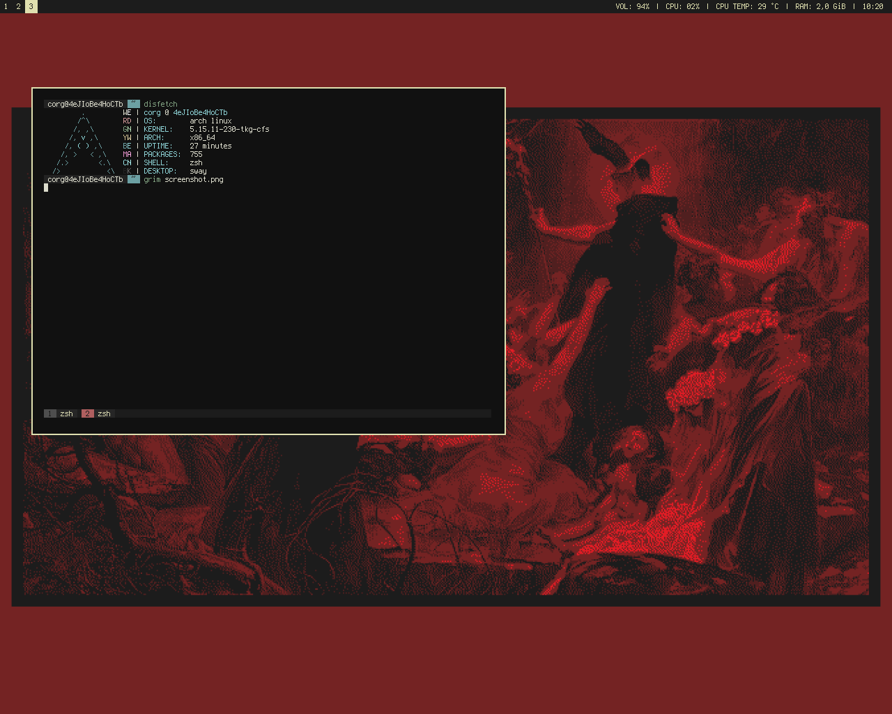

disfetch - system information fetching tool
hi
disfetch is a simple POSIX Shell utility that fetches your system information in a prettier way.
why disfetch?
Unlike many other fetching tools, disfetch covers several principles:
- being the most simple and minimalistic while providing beautiful same style logos
- providing user with the only important and needed information, remaining simple in all aspects
- each logo is handmade, ASCII-only, not more and not less than 8 rows
- highly commented readable and maintainable bloatless code
- being fast
some examples
by me:  by https://github.com/Corgiek: 
{kind=link}
{kind=link}
benchmarks
| fetch | time |
|---|---|
disfetch | 0.15s user 0.05s system 108% cpu 0.188 |
pfetch | 0.04s user 0.02s system 101% cpu 0.057 |
neofetch | 0.16s user 0.10s system 57% cpu 0.443 |
neofetch --disable resolution theme icons term cpu gpu memory wm_theme | 0.14s user 0.07s system 102% cpu 0.207 |
supported operating systems
Here's the list of currently supported operating systems.
| distro | packages | logo |
|---|---|---|
| Alpine Linux | yes | yes |
| Android | yes | yes |
| Astra Linux | yes | yes |
| ArchBang Linux | yes | yes |
| ArchLabs Linux | yes | yes |
| Arch Linux | yes | yes |
| ArcoLinux | yes | yes |
| Artix Linux | yes | yes |
| Bedrock Linux | yes | yes |
| CentOS | yes | yes |
| Debian | yes | yes |
| Elementary OS | yes | yes |
| EndeavourOS | yes | yes |
| Fedora | yes | yes |
| Garuda Linux | yes | yes |
| Gentoo Linux | yes | yes |
| Haiku OS | yes | yes |
| Kali Linux | yes | yes |
| Kubuntu | yes | yes |
| Linux Mint | yes | yes |
| lubuntu | yes | no |
| Manjaro | yes | yes |
| MSYS2 | yes | yes |
| MX Linux | yes | yes |
| NixOS | yes | yes |
| openSUSE | yes | yes |
| Parabola Linux-libre | yes | yes |
| postmarketOS | yes | yes |
| Qubes OS | yes | yes |
| Raspbian | yes | yes |
| Red Hat Enterprise Linux | yes | yes |
| Slackware Linux | yes | yes |
| Ubuntu | yes | yes |
| Void Linux | yes | yes |
| Zorin OS | yes | yes |
installation
- There's a package in AUR
- There's a package in MPR
- There's a package in Alpine
- There's also a package in Nixpkgs
- Grabbing the latest release tarball then running
make installshould be enough.
Feel free to contribute, create and maintain packages for disfetch for your favorite distros.
usage
See disfetch -h.